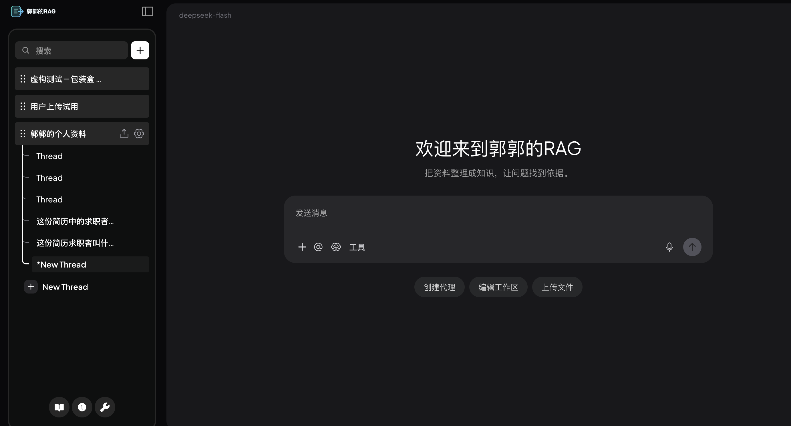
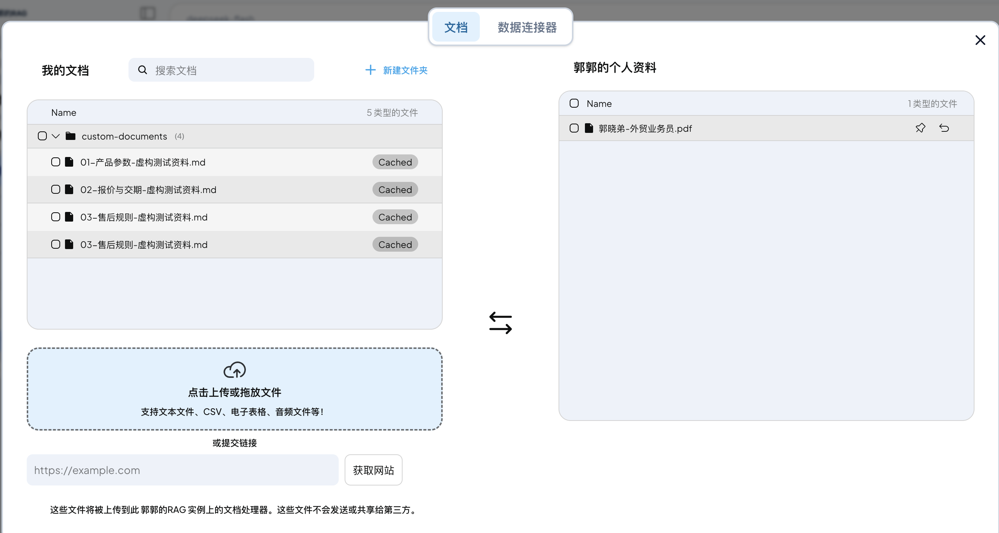
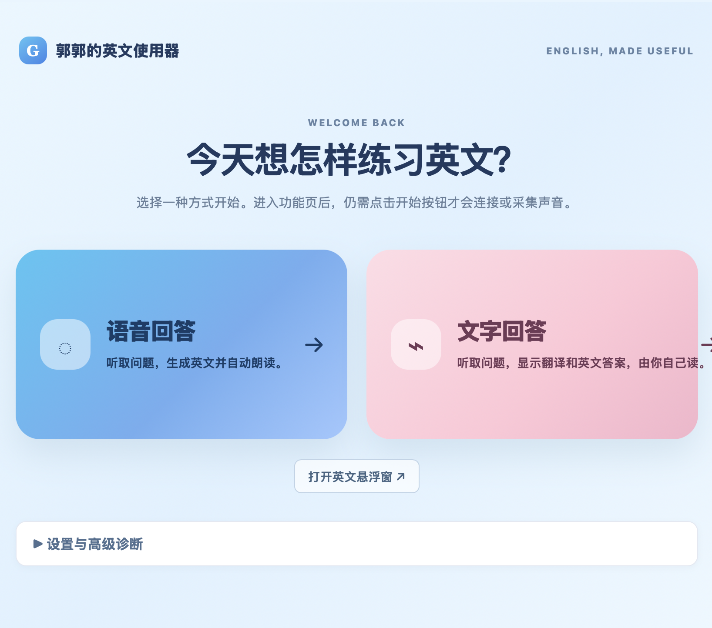
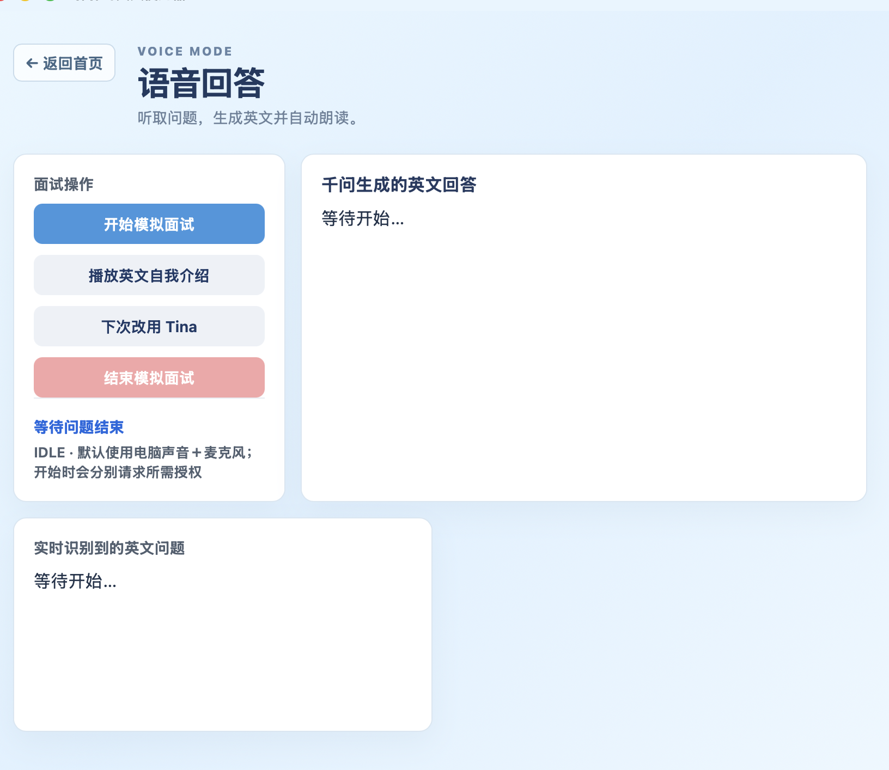
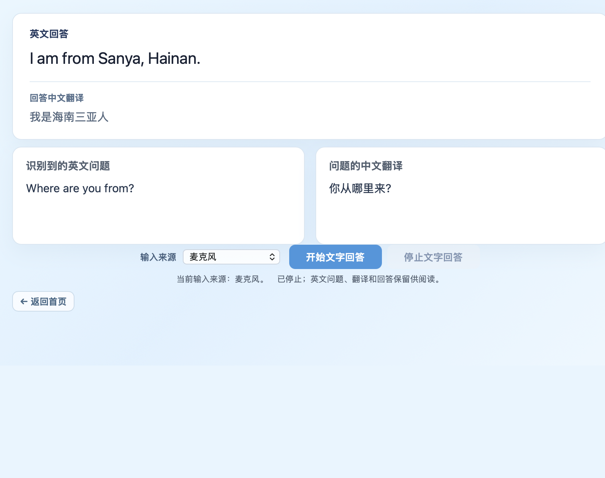

不是只“找到答案”，还要能判断依据
已有产品资料描述的使用场景是：个人面对 PPT、文档和网页时，翻找信息耗时；回答若没有可回看的原文，判断仍会回到人工查找。产品目标因此聚焦于让资料、回答和来源建立可核对的连接。
查找资料把分散资料放进可使用的范围。
判断范围用工作区区分本次应查询哪一批资料。
提问获得回答将查找动作收敛为可连续提问的入口。
回看依据让回答能回到来源片段，而非只看结论。
一个是在本地运行的知识库 Agent RAG，一个是在 macOS 上运行的英文交流助手。都能跑起来，也都能看到它哪里不行。
两件产品按同一个顺序推进：从真实问题出发，定义需求、设计方案、做交互，再验证它到底成不成。页面记录的是这条线，不是功能清单。
01 / SELECTED WORK
两个围绕人和知识流动展开的 AI 产品实践。
ENTERPRISE KNOWLEDGE · RAG
从资料查找与来源核对出发，展示一套 RAG 产品的工作框架与产品思路。
面向个人资料查找的知识问答助手：把资料放入工作区后，用户可以提问、查看回答，并回到来源片段核对依据。

已有产品资料描述的使用场景是：个人面对 PPT、文档和网页时，翻找信息耗时；回答若没有可回看的原文，判断仍会回到人工查找。产品目标因此聚焦于让资料、回答和来源建立可核对的连接。
依据资料上传界面截图：左侧“我的文档”用于选择或新增资料，右侧显示当前工作区的资料。上传解决“资料进入文档集合”；加入工作区解决“这批资料将被哪个查询范围使用”。
左侧是候选资料；右侧是当前工作区的已关联资料。

已有资料支持的交互主线是：选择工作区或资料范围 → 输入问题 → 查看回答 → 打开来源片段核对。工作区是资料边界，来源入口不是装饰，而是用户判断回答的回路。
先定怎么算过，再进入迭代。
12 道题，6 类场景，覆盖答得出来和答不出来的情况。每道题按四项口径打分，四项都过才算这道题过。
检索为空，或资料里没有足够上下文时，明确说明资料未覆盖，不用推测顶上。
真实样本：问「是否支持定制烫金」，资料里没有这项工艺说明，产品直接回答「现有资料无法确认是否支持定制烫金」，而不是给一个像样的答案。
录屏展示已装入资料后，用户在 RAG 产品中提问并获得回答的过程。视频无声音。
24 秒产品操作录屏 · 手动播放
VOICE · PRACTICE · TEXT ANSWER
从英文交流准备的真实困难出发，整理需求、方案、实现与后续体验检查。
一个面向英文面试与英文问答的 Mac 桌面工具：听到问题、翻成中文、给出一段能直接读出来的英文答案。
难的不是翻译问题，是把“我做过什么”当场组织成能朗读的英文——所以它结合个人经历生成答案，并按预筛词句压短句。

从英文交流的实际经历出发：即使熟悉自己的工作，面对英文问答时仍可能听不清、反应慢，或无法把自己的经历组织成当下能说出来的英文。
一个入口只做一件事：文字回答与语音回答分开进入。
连续问答：一次开始持续接收，旧答案自动作废。
可核对：识别原句始终保留，答案不是黑箱。


脱敏运行记录按事件分段：语音停止 → 最终转写 → 回答请求 → 首段文本 → 完成。
下一步不加功能，先分段测四个耗时：识别等待、首字延迟、完整答案、页面显示，再决定速度与完整性怎么取舍。
录屏为一次提问的完整等待过程，未剪辑、无声音。
受控测试；界面与录屏来自实际运行的产品，方案图为示意。
03 / PRODUCT PRINCIPLES
先理解人、场景与任务，再确定技术应承担的角色。
把输入、判断与结果组织成用户能够建立信任的体验。
保留边界和证据，以真实反馈校准下一步产品决策。
04 / WHY ME
TOB 销售卖的是产品，AI 产品经理做的也是产品——同一个东西，两个位置：一个站在产品外侧面对客户，一个站在产品内侧定义它。3 年 TOB 销售，我一直在外侧。
站在外侧这几年，练出来的是三件事：产品属性经不经得起客户追问、客户说出来的和真正要用的差在哪、B 端与 C 端的客户会怎么用、什么时候会弃用、什么条件下愿意续。这些不是从文档里读出来的，是从一次次对话里问出来的。
现在位置换到内侧，动作没变，只是要先做决定、再拿出去验证：先分清谁在用、谁付费、谁拍板；再把模糊表达拆成目标、约束和完成条件；然后把方案拆给不同角色，明确各自交付什么、卡在哪；最后在取舍和边界上做决定。对象从客户换成了用户——
客户说「我要这个东西」的时候，销售要把它变成订单，产品经理要把它变成需求、方案和验收标准。这两件事我都做过，只是先后不同。
05 / HOW IT WAS BUILT
需求、方案、交互、验证由我定；实现不是一个人敲出来的。Codex、ChatGPT、Claude、DeepSeek、豆包一起上，各自做各自擅长的那部分。
用多个模型不是图新鲜，是因为它们确实不一样：有的能把一句话落成可运行的代码，有的能把一段逻辑讲清楚，有的更贴中文语料和本地表达。按任务分派，比认准一个工具更省时间。但工具越多，越需要有人先定「什么算对」——评测口径、拒答边界、故障归因，都是我定的。
我的位置不是写代码，是决定做什么、怎么做，以及怎么判断它成了。